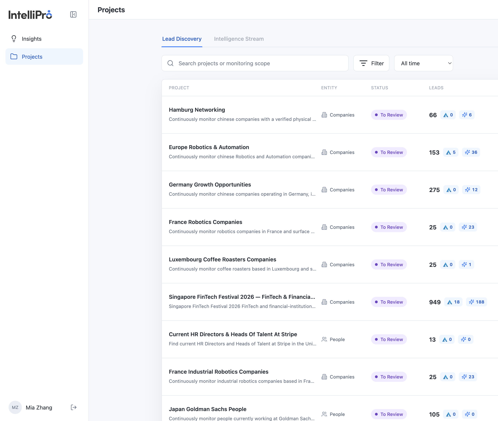
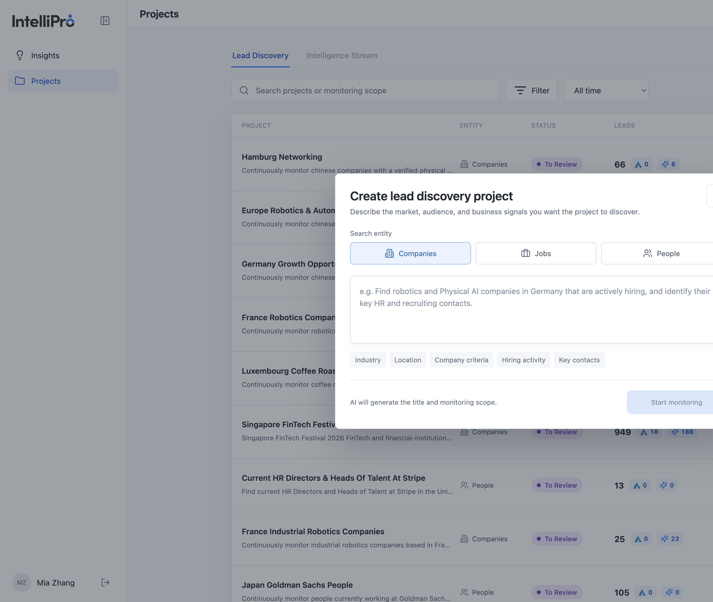
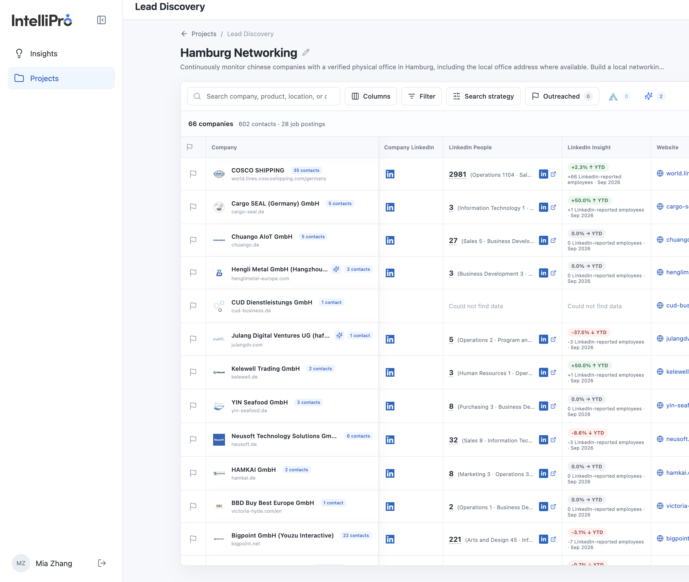
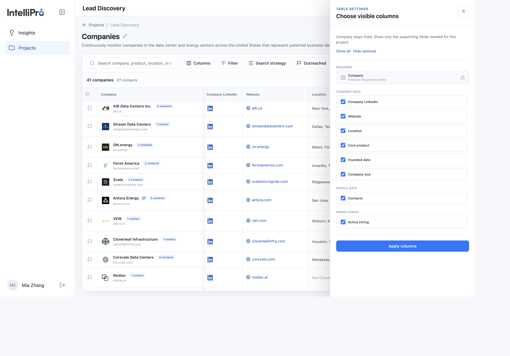
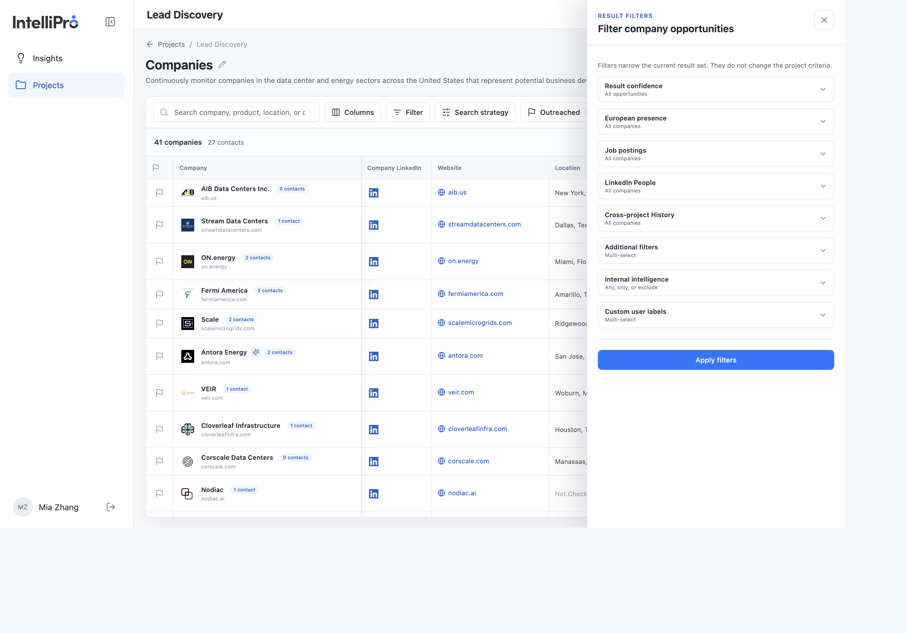
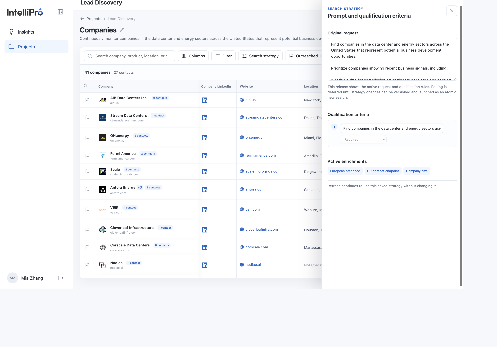
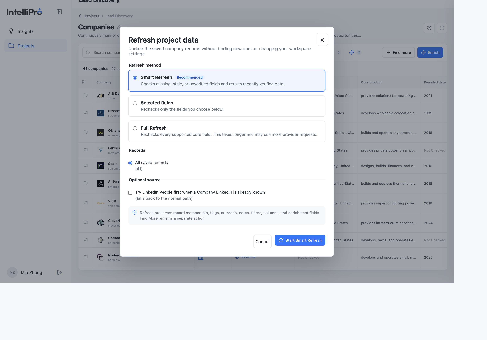
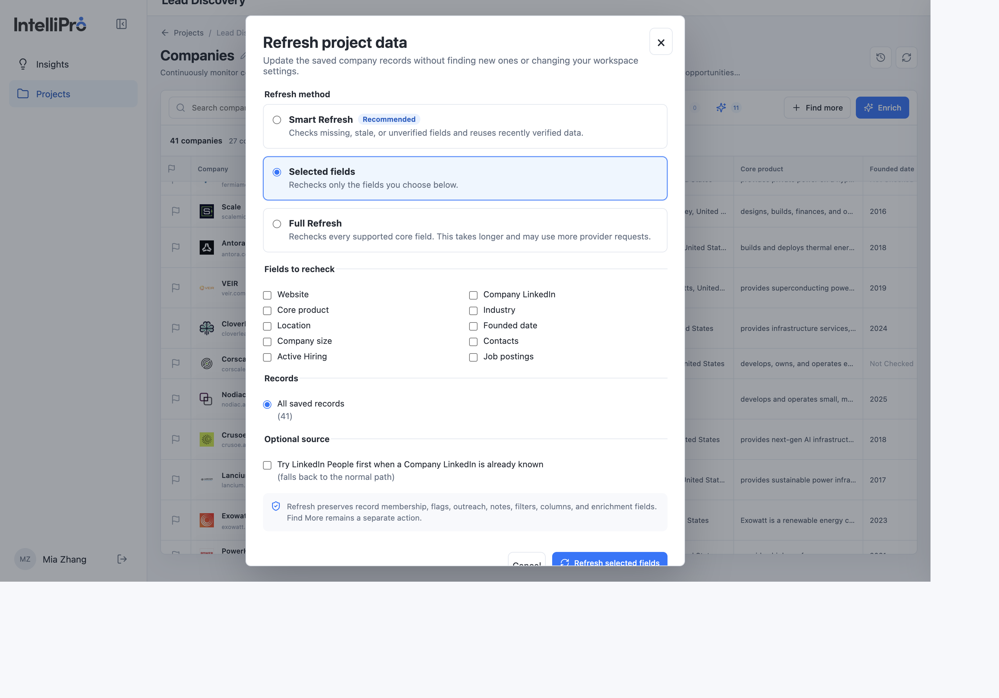
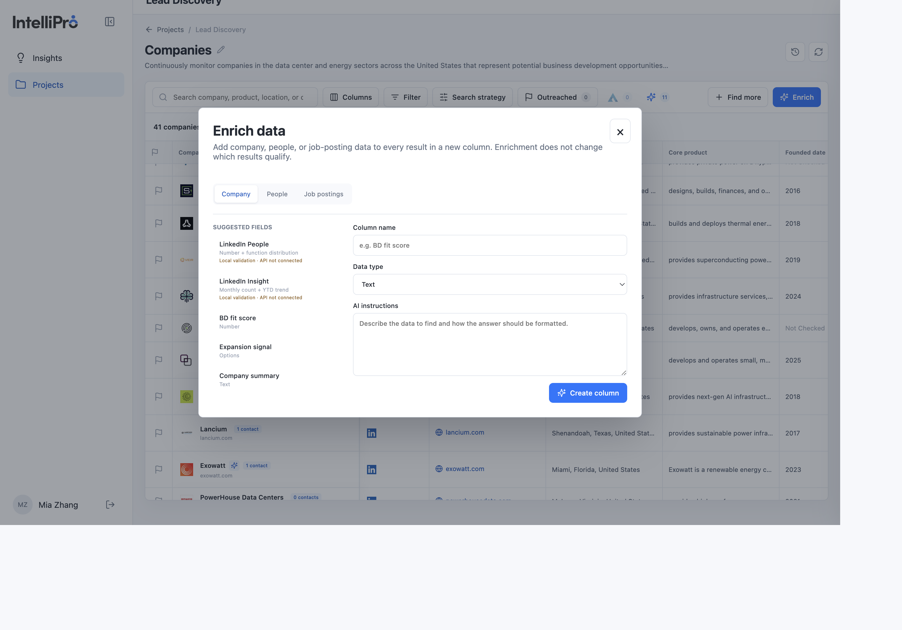
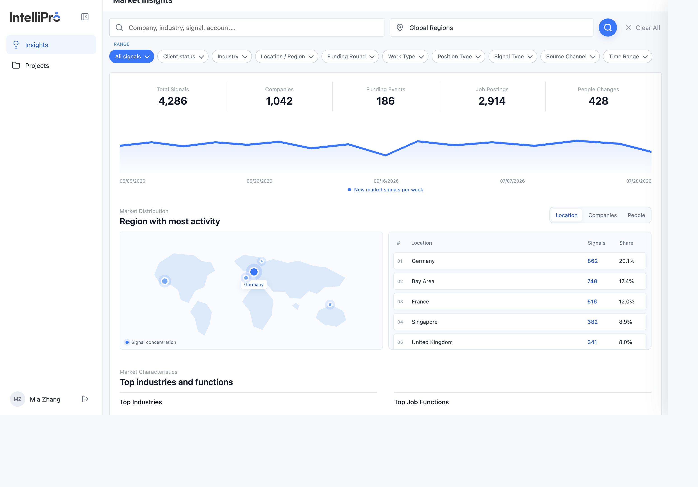

User manual
Use this guide to create a lead list, review what came back, and decide when the project is finished. The same steps are the acceptance path: each action says what you should see.
1. Start here
BD Pitch turns a business request into a saved list of companies, people, or job postings. Write the request in the language you work in. English and Chinese are both supported, and the product does not limit the language. The AI reads the request as you wrote it and uses that analysis to search for the companies, people, or jobs you asked for.
A finished search is not a finished project. To Review means the system has stopped and the list is ready for a person. Completed happens only when you choose Mark completed.
2. Find a project
Projects opens on Lead Discovery. Intelligence Stream is visible and disabled. That tab is not part of this workflow.

- Select Projects. You should see search, Filter, a time range, and New project.
- Search by project name or by the words in the monitoring request. Use Filter for Running, To Review, or Completed. Use the time menu for All time, Last 30 days, or Last 7 days. The list narrows. The saved projects do not change.
- Select a project name to open it.
How to read a row
| What you see | What it means |
|---|---|
| Companies, People, or Jobs | The kind of record in that project. |
| To Review | The run has finished. A person still needs to review it. |
| The number | How many leads are saved. |
| The triangle mark | How many leads already match an internal APN company or person. See APN and Insight. |
| The sparkle mark | How many companies have a target or similar-company insight. See APN and Insight. |
| Names under the row | The owner and the people who can see the project. |
The status sentence under the title tells you what still needs attention. Examples you will actually see: an ambiguous company match, a missing APN connection, or a Find more that was stopped with the saved rows kept.
3. Create a project

- Select New project. The dialog title is “Create lead discovery project.”
- Choose Companies, Jobs, or People. This choice decides the columns you get later.
- Write the monitoring request in Chinese, English, or another language. A useful request names the quantity, who you want, the place, the hard requirements, and anything you only want reported. The labels under the box suggest what to include. For companies they are Industry, Location, Company criteria, Hiring activity, and Key contacts. They change when you switch entity. The AI analyzes the text you entered.
- Select Start monitoring. The button stays inactive until the request has text. The product writes the project title and the monitoring scope for you.
4. Read the result
Open the project from the list. The breadcrumb is Projects / Lead Discovery. The title can be renamed with the pencil. The sentence under the title is the monitoring scope.
| Status | What you do |
|---|---|
| Running | Wait. The progress line shows what is still being collected. The table can still change. |
| To Review | Read the rows and the status sentence. A warning can sit next to a usable list. That is still a finished run. |
| Completed | Someone chose Mark completed. It stays completed until a new sourcing run starts. Reopen for review brings it back. |
5. Work the list
The results page has 6 operations. They fall into two groups. The first four change what you see and leave the saved rows in place. The last two are how you work a row. APN and Insight are in the next section.
| Operation | Group | What you use it for | |
|---|---|---|---|
| 1 | Search | Look at the list | Find text in the current rows. |
| 2 | Columns | Look at the list | Show or hide fields. |
| 3 | Filter | Look at the list | Narrow the rows by the groups for this entity. |
| 4 | Search strategy | Look at the list | Read how the request was interpreted. You cannot edit it yet. |
| 5 | Outreached | Work a row | Show only the rows you have flagged. |
| 6 | Outreach | Work a row | Open a row from its flag. Outreach contains Generate outreach, Notes, and Labels. |

The line above the table is the size of the saved result, such as “41 companies · 27 contacts.”
Search
The search box matches the text on the current rows. On a company project the placeholder is “Search company, product, location, or contact.” While a search is active, the count above the table changes from the full size, such as “41 companies,” to the matches, such as “1 of 41 companies.” Clear the box and the full saved list comes back.
Columns

- Select Columns. The panel title is “Choose visible columns.”
- The primary column is locked: Company, Name, or Job Title, depending on the project.
- Check or uncheck the groups you need. On a company project those groups include Company data, People data, and Hiring signal. Show all and Hide optional set the optional fields together.
- Select Apply columns. The table columns change. The saved values stay. Reload and the same columns are still visible.
Filter

Select Filter. The help line says filters narrow the current result set and leave the project criteria unchanged. Select Apply filters when the groups are set.
| Entity | Filter groups you can use |
|---|---|
| Companies | Result confidence, European presence, job postings, LinkedIn People, cross-project history, additional filters, internal intelligence, and custom user labels. A local-entity group appears when the project asked for a local legal entity. |
| People | LinkedIn profile, work email or phone, language, Director+ seniority, new sourced profile, and APN or duplicate profile, plus internal intelligence and custom user labels. |
| Jobs | Company, active jobs, official source, language specified, posting date, plus internal intelligence and custom user labels. |
Search strategy

- Select Search strategy. The title is “Prompt and qualification criteria.”
- Read Original request. It is the monitoring request that was saved.
- Read Qualification criteria. Each rule has a priority such as Required, High priority, or Opportunity signal.
- Read Active enrichments. Refresh keeps using this saved strategy.
Outreached
Outreached is the toolbar control for rows you have already flagged. The number on the button is the flagged count. Select it to show only those rows, and select it again to return to the full list. Reload the project and confirm the flag is still there.
Outreach
Outreach is the panel for one row. In the picture below, the red outline marks the flag in the first column. That outline is only in this guide. In the product, click the flag icon itself. Clicking it marks the row and opens the panel.
The panel has two parts and three features. Generate outreach is the first part, and it has three steps. Notes and Labels are the second part.

Generate outreach
The first part of the panel builds the message in three steps.
- Select Contact. Choose the person on this row, then choose a channel that the contact already has, such as email, LinkedIn, or phone.
- Candidate Pitch. This is where you will choose a candidate to pitch. That choice is not available in this release, because candidates are not linked here yet. The panel stays on “Context only — no candidate pitch,” and the message uses the company and the contact. Linking a candidate is planned for later.
- Personalized Outreach. After a contact and a channel are selected, this step writes the message for that contact. Personalize with AI drafts it. The language control writes it in English or Chinese. Regenerate with AI rewrites a draft you already have. Drafting stays in this panel. Sending the message is a separate action, and this guide does not cover sending.
Notes and Labels
The second part of the same panel is where you record your own follow-up.
- Notes. Write follow-up notes, customer feedback, or the next step. The note auto-saves as you type.
- Labels. Open Add labels. Choose an existing label, or type a new one and pick one of the five colors. The label appears on the row. In Filter, Custom user labels can show only the rows that carry a selected label. A label and the Outreached flag stay separate: a label does not flag the row, and a flag does not create a label.
6. APN and Insight
APN and Insight run on the saved rows after the search. The two marks on the toolbar, and the same two marks on each project in the project list, are their counts.
| APN | Insight | |
|---|---|---|
| What it checks | Whether this company or person is already an APN record, so a duplicate is recognized. | Whether a saved company resembles companies from recent APN delivery. |
| Applies to | Companies and people. | Companies. On a jobs project, the check uses the employer company. A people project has no insight count. |
| A match | An existing APN company or person. It is included in the triangle count. | A target or similar company. It is included in the sparkle count. |
| A zero | No confirmed APN match. The status sentence says whether the check finished, the name was ambiguous, or APN is waiting for a connection. An ambiguous company stays in the list and is not counted as existing. | No target or similar company on this project. |
| On the row | The triangle marks a confirmed company or person. | The sparkle on a company name opens that company’s delivery evidence. |
| On the toolbar | Select the triangle to show only confirmed APN matches. Select it again to show every row. | Select the sparkle to show only insight matches. Select it again to show every row. |
7. Companies, People, and Jobs
The buttons on the results page are the same. The rows are not.
| Entity | One row is | Look for |
|---|---|---|
| Companies | One company | Website, location, product, contacts, hiring, job postings, and why it was selected. APN and similar-company marks apply here. |
| People | One person | Company, title, location, profile, and contact fields. If APN is not connected, the status says so and the person row still stays in the list. |
| Jobs | One open posting | Employer, title, location, date, source, and whether the posting is still open. The employer is kept separate from the page that published the job. |
8. Refresh, Find more, and Enrich
Use these when the saved list needs a change. Each one does a different job. Refresh rechecks rows you already have. Find more looks for additional rows. Enrich adds one new column.
Refresh

The refresh icon is at the top of the project, beside Project history. The dialog title is “Refresh project data.” It updates saved records. It does not look for new companies, people, or jobs, and it does not change workspace settings.
| Method | What it rechecks |
|---|---|
| Smart Refresh | Missing, stale, or unverified fields. Recently verified data is reused. This is the default. |
| Selected fields | Only the fields you tick. On a company project those include Website, Company LinkedIn, Core product, Industry, Location, Founded date, Company size, Contacts, Active Hiring, and Job postings. |
| Full Refresh | Every supported core field. This takes longer and can use more provider requests. |

- Choose the method.
- Under Records, keep All saved records, or choose Current filtered results when a search or filter is already applied.
- The optional source, “Try LinkedIn People first when a Company LinkedIn is already known,” is off unless you turn it on. If that path has nothing to add, the refresh continues on the normal path.
- Start the refresh and wait until the button returns to the normal refresh icon. Reload the project. The rows stay. Flags, outreach, notes, filters, columns, and enrichment columns stay. A selected field can change. The other fields stay.
Find more
Find more is on the results toolbar, to the left of Enrich. It has no setup dialog. Selecting it starts a search for up to 10 more records of the same entity. While it is running, the same button stops it. If you stop it, the rows already saved stay, and the project status says the stop preserved them.
Enrich

- Select the blue Enrich button. The dialog title is “Enrich data.”
- Choose Company, People, or Job postings. Suggested fields are listed on the left. LinkedIn People and LinkedIn Insight say when they are local validation and the API is not connected.
- Name the column, choose a data type (Text, Number, Options, Email, or URL), and write the AI instructions.
- Select Create column. The new column appears on the table. The saved rows stay the same.
9. Market Insights
Market Insights is the shared market screen. It pulls insight signals from the BDP common data pool and shows them together: companies, funding, job postings, and people changes. A project’s own lead list stays in that project. These totals are market context, not the pass condition for a project.

What the pool shows
| Summary | What it counts |
|---|---|
| Total Signals | Insight signals in the current range. |
| Companies | Companies represented in those signals. |
| Funding Events | Funding signals in the pool. |
| Job Postings | Job-posting signals in the pool. |
| People Changes | People-change signals in the pool. |
The chart under the totals is new market signals per week. Market Distribution can be switched among Location, Companies, and People. The location view lists the regions with the most activity and each region’s share.
How to narrow it
- Select Insights.
- Search by company, industry, signal, or account. The second box is the location, starting at Global Regions. Clear All resets the search.
- Use the Range chips: All signals, Client status, Industry, Location / Region, Funding Round, Work Type, Position Type, Signal Type, Source Channel, and Time Range.
- Switch Market Distribution among Location, Companies, and People. Further down, Market Characteristics lists top industries and top job functions.
10. Acceptance checklist
Run this on a project you are allowed to create or refresh. Write down the project name, entity, request, time, and what the status said. Do not send a real outreach message as part of the test.
| Step | Do this | Pass when |
|---|---|---|
| 1 | Open Projects | Search, Filter, time range, and New project are visible. |
| 2 | Create one project. Write the request in English or Chinese. | It saves with that entity. The AI analyzes the request you wrote. |
| 3 | Reload it | The rows are still there. |
| 4 | Watch the status | Running while the result can still change. To Review when the search and its checks have stopped. |
| 5 | Open one row | You can see the record, a source, and the field you expected for that entity. |
| 6 | Search, filter, hide a column, and open Search strategy | Only the view changes. The saved rows remain. Search strategy shows the request and the criteria, and both stay read-only. |
| 7 | Flag and unflag one row | The Outreached count updates, and the flag is still there after reload. |
| 8 | Refresh one selected field | That field can change. Unrelated fields stay. |
| 9 | Mark completed, then reopen | Completed happens only from that action. Reopen for review returns it to review. |
| 10 | Read the APN triangle and the Insight sparkle | The triangle is confirmed APN companies or people. The sparkle is company insight. A zero is a count, and the status sentence says whether the check finished. |
| 11 | Open Insights | The market view and its Range filters render. Its pool totals are not the project pass condition. |
Keep a copy of the status sentence, one representative row, and the before-and-after value for the refresh test.
11. If something looks wrong
| What you see | What to do |
|---|---|
| New project or saving is disabled, and a storage alert is showing | The workspace cannot be saved right now. Do not start the run again until the alert is gone. |
| To Review, with a warning | Read the warning and the rows. The run can still be usable. |
| Source unavailable | That field could not be verified. Leave the reason in place. |
| Connect or reconnect APN | The list is still there. The person or company match did not finish because the APN connection is missing. |
| Fewer companies than you asked for | Duplicates and non-company pages can be removed and are not replaced. The status should not claim the full count was reached. |
| No recent hiring evidence | The hiring check finished without an accepted posting. It is not a blank error. |
| Find more or Enrich was stopped | The saved rows stay. Read the status before you start again. |
| Refresh says nothing changed | Open the field you selected before you repeat the refresh. |